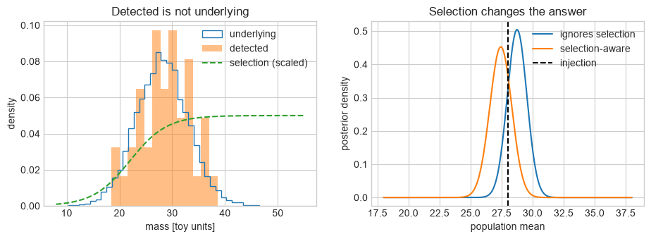
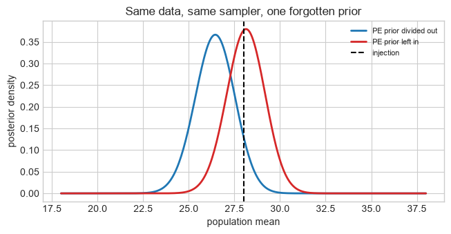

Part 2C: LVK populations and PE checks#
FQCP 2026 · Bayesian parameter estimation for gravitational-wave sources
Goal and route#
Turn event-level information into a population statement and see why the detected catalogue is not the underlying population.
Live route
Run the selection-bias picture and complete its question. Stop at the end-of-live-route marker; posterior-sample reweighting is an extension.
Boundary: The toy treats event masses as exactly measured. Production population inference reweights uncertain event posterior samples and estimates selection with injection campaigns.
import numpy as np
import matplotlib.pyplot as plt
from scipy.stats import norm
rng = np.random.default_rng(20260817)
plt.style.use("seaborn-v0_8-whitegrid")
1. Start with the catalogue you detected#
Imagine an underlying population of binary masses. The detector does not see a random subset: louder, heavier systems are easier to detect. The observed catalogue can therefore have a different shape from the population that produced it.
The next plot deliberately separates three objects:
the underlying population we would like to infer;
the detected catalogue selected from it;
the population mean inferred with and without correcting that selection.
Predict first: if high-mass systems are easier to detect, should the detected catalogue look heavier or lighter than the underlying population?
from scipy.stats import norm
population_mean, population_width = 28.0, 5.0
all_masses = rng.normal(population_mean, population_width, 8000)
all_masses = all_masses[(all_masses > 8) & (all_masses < 55)]
def detection_probability(mass):
return 1 / (1 + np.exp(-(mass - 22) / 3.5))
detected = all_masses[rng.random(all_masses.size) < detection_probability(all_masses)][
:40
]
mean_grid = np.linspace(18, 38, 320)
integration_grid = np.linspace(8, 55, 900)
naive = []
corrected = []
for mean in mean_grid:
event_term = norm.logpdf(detected, mean, population_width).sum()
alpha = np.trapezoid(
norm.pdf(integration_grid, mean, population_width)
* detection_probability(integration_grid),
integration_grid,
)
naive.append(event_term)
corrected.append(event_term - len(detected) * np.log(alpha))
def normalise_population(logp):
p = np.exp(logp - np.max(logp))
return p / np.trapezoid(p, mean_grid)
fig, axes = plt.subplots(1, 2, figsize=(11, 3.4))
mass_axis = np.linspace(8, 55, 300)
axes[0].hist(all_masses, bins=35, density=True, histtype="step", label="underlying")
axes[0].hist(detected, bins=13, density=True, alpha=0.5, label="detected")
axes[0].plot(
mass_axis, detection_probability(mass_axis) / 20, "--", label="selection (scaled)"
)
axes[0].set(
xlabel="mass [toy units]", ylabel="density", title="Detected is not underlying"
)
axes[0].legend()
axes[1].plot(
mean_grid, normalise_population(np.array(naive)), label="ignores selection"
)
axes[1].plot(
mean_grid, normalise_population(np.array(corrected)), label="selection-aware"
)
axes[1].axvline(population_mean, color="k", ls="--", label="injection")
axes[1].set(
xlabel="population mean",
ylabel="posterior density",
title="Selection changes the answer",
)
axes[1].legend()
plt.show()

print(f"Injected population mean: {population_mean:.2f}")
print(f"Detected-catalogue mean: {detected.mean():.2f}")
print(f"Naive MAP: {mean_grid[np.argmax(naive)]:.2f}")
print(f"Selection-aware MAP: {mean_grid[np.argmax(corrected)]:.2f}")
Injected population mean: 28.00
Detected-catalogue mean: 28.75
Naive MAP: 28.72
Selection-aware MAP: 27.47
The selection correction in one equation#
If \(\Lambda\) describes the population, the detected catalogue contributes
\(\alpha(\Lambda)\) is the fraction of that proposed population the search would detect. Dividing by it corrects the fact that the catalogue is selected rather than random. For the first pass, the plot is the main lesson; this equation is the bookkeeping that produces the corrected blue curve.
This compact example treats masses as exactly measured. Real population inference reweights uncertain event posteriors, estimates selection with injection campaigns, infers several hyperparameters and often the rate, and checks sensitivity to event-level priors and waveform systematics.
Question#
Measure how far each estimate sits from the injected population mean, and say which of the two answers the astrophysical question.
Compute the absolute error of the naive MAP and of the selection-aware MAP.
The naive estimate is not merely noisy, it is biased in a predictable direction. Which direction, and why that one?
Both analyses are internally consistent and neither is a coding mistake. What exactly is the naive posterior a correct answer to?
# Your code here. `mean_grid`, `naive`, `corrected`, and `population_mean` are
# all defined above.
Hint
The detected catalogue is not a random draw from the underlying population.
Heavier systems are louder, so they enter the catalogue more often — compare
detected.mean() with population_mean before you look at either posterior.
End of the live route
Selection effects alone can move a population result even when every detected event is measured perfectly. The extension below adds the next complication: real events are posterior distributions rather than exact masses.
Extension: events are posteriors, not numbers#
Section 1 treated every mass as exactly measured so that selection bias stayed visible on its own. Real events arrive as posterior samples, and that changes the hierarchical likelihood: the single-event term becomes an average over that event’s samples,
The division by \(\pi_{\rm PE}\) is easy to miss. Posterior samples were drawn under the prior used by the event-level PE run, not under a flat prior. If that prior is not divided out, its shape is counted again as population information.
Selection remains a separate catalogue-level correction,
and the catalogue likelihood contains \(\alpha(\Lambda)^{-N}\). For the usual likelihood of already detected events, do not multiply each posterior sample by \(p_{\rm det}(\theta)\) as well: that would count the detection process twice. The search injections used to estimate \(\alpha\) must, however, represent the population and the complete search pipeline being analysed.
Below, the PE runs used \(\pi_{\rm PE}(m)\propto m^4\). A rising prior like this is an ordinary choice — priors flat in distance-cubed or in detector-frame mass do the same thing — and it is steep here so the effect is visible with only 40 events.
Predict before running: the PE prior rises with mass. If it is left in, should the inferred population mean come out too high or too low?
measurement_sigma = 3.0
n_event_samples = 400
def pe_prior(mass):
return mass**4
# Each detected event is measured with finite precision, then analysed under
# pe_prior. Importance resampling turns the measurement likelihood into
# posterior samples without needing a sampler here.
noisy_observation = detected + rng.normal(0, measurement_sigma, detected.size)
proposal = np.clip(
rng.normal(noisy_observation[:, None], measurement_sigma, (detected.size, 4000)),
8,
55,
)
proposal_weights = pe_prior(proposal)
proposal_weights /= proposal_weights.sum(axis=1, keepdims=True)
event_samples = np.array(
[
rng.choice(row, size=n_event_samples, p=weight)
for row, weight in zip(proposal, proposal_weights)
]
)
print("posterior samples per event:", event_samples.shape)
posterior samples per event: (40, 400)
def hyper_posterior(divide_pe_prior, samples=None, grid=None):
samples = event_samples if samples is None else samples
grid = mean_grid if grid is None else grid
values = []
for mean in grid:
population_density = norm.pdf(samples, mean, population_width)
if divide_pe_prior:
population_density = population_density / pe_prior(samples)
alpha = np.trapezoid(
norm.pdf(integration_grid, mean, population_width)
* detection_probability(integration_grid),
integration_grid,
)
values.append(
np.log(population_density.mean(axis=1)).sum() - len(samples) * np.log(alpha)
)
return np.array(values)
correct = normalise_population(hyper_posterior(divide_pe_prior=True))
prior_contaminated = normalise_population(hyper_posterior(divide_pe_prior=False))
fig, ax = plt.subplots(figsize=(7.5, 3.4))
ax.plot(mean_grid, correct, color="C0", lw=2, label="PE prior divided out")
ax.plot(mean_grid, prior_contaminated, color="C3", lw=2, label="PE prior left in")
ax.axvline(population_mean, color="k", ls="--", label="injection")
ax.set(
xlabel="population mean",
ylabel="posterior density",
title="Same data, same sampler, one forgotten prior",
)
ax.legend(fontsize=8)
plt.show()
correct_map = mean_grid[np.argmax(correct)]
contaminated_map = mean_grid[np.argmax(prior_contaminated)]
print(f"injected population mean : {population_mean:.2f}")
print(f"PE prior divided out : {correct_map:.2f}")
print(f"PE prior left in : {contaminated_map:.2f}")
print(f"shift : {contaminated_map - correct_map:+.2f}")

injected population mean : 28.00
PE prior divided out : 26.46
PE prior left in : 28.16
shift : +1.69
Expected output — open this if your cell has not run yet

Do not read the single-catalogue numbers as a verdict. With 40 events the statistical scatter on the population mean is of order one mass unit, so on any one realisation either curve can land closer to the injection by luck — including the wrong one. That is precisely why a bug like this survives code review.
The way to see it is to repeat the experiment. The scatter averages away; a systematic error does not.
coarse_grid = np.linspace(18, 38, 80)
shifts, correct_errors = [], []
for trial in range(20):
trial_rng = np.random.default_rng(500 + trial)
trial_detected = all_masses[
trial_rng.random(all_masses.size) < detection_probability(all_masses)
][:40]
trial_observed = trial_detected + trial_rng.normal(
0, measurement_sigma, trial_detected.size
)
trial_proposal = np.clip(
trial_rng.normal(
trial_observed[:, None], measurement_sigma, (trial_detected.size, 4000)
),
8,
55,
)
trial_weights = pe_prior(trial_proposal)
trial_weights /= trial_weights.sum(axis=1, keepdims=True)
trial_samples = np.array(
[
trial_rng.choice(row, size=n_event_samples, p=weight)
for row, weight in zip(trial_proposal, trial_weights)
]
)
good = coarse_grid[np.argmax(hyper_posterior(True, trial_samples, coarse_grid))]
bad = coarse_grid[np.argmax(hyper_posterior(False, trial_samples, coarse_grid))]
shifts.append(bad - good)
correct_errors.append(good - population_mean)
shifts = np.array(shifts)
correct_errors = np.array(correct_errors)
print(
f"correct analysis, error over 20 catalogues : "
f"{correct_errors.mean():+.2f} +/- {correct_errors.std():.2f}"
)
print(
f"shift from the forgotten prior : "
f"{shifts.mean():+.2f} +/- {shifts.std():.2f}"
)
print(f"shifts with the same sign : " f"{(shifts > 0).sum()}/20")
assert (shifts > 0).sum() >= 18, "the forgotten prior should bias one way"
print("check passed: the error is systematic, not scatter")
correct analysis, error over 20 catalogues : -0.95 +/- 0.85
shift from the forgotten prior : +1.70 +/- 0.12
shifts with the same sign : 20/20
check passed: the error is systematic, not scatter
The correct analysis scatters around the injection, with a residual offset well inside its own spread — that is what 40 events buys you. The forgotten prior shifts the answer the same way every time — that is the signature of a systematic, and it is why repeated simulation, not a single convincing-looking run, is what validates a population pipeline.
Nothing about the sampler was wrong here. No convergence diagnostic would flag it, and the contaminated posterior looks perfectly healthy on its own. This is the characteristic failure of hierarchical inference: the bug lives in the bookkeeping between stages, not inside either stage.
Checklist: what to verify before a population claim#
Each item below has bitten a real analysis.
Check |
What it catches |
|---|---|
sampler convergence and \(N_{\rm eff}\) at event level |
a hyper-posterior built on unconverged event runs |
posterior samples pressing against prior boundaries |
an event whose prior, not data, set its width |
posterior-predictive and residual checks per event |
waveform or noise mismodelling entering the population |
dividing out the event-level sampling prior |
the bias demonstrated above |
enough samples per event that the Monte Carlo sum is stable |
a hyper-likelihood dominated by a handful of samples |
injections that match the analysed population and pipeline |
a selection function \(\alpha(\Lambda)\) that describes a different search |
repeating under alternative waveform, calibration, and population models |
a result that is really a statement about one model choice |
The last one is the difference between “the data prefer this population” and “this population model, fitted to these data, prefers these hyperparameters”.
Read or try next#
Thrane & Talbot (2019) derives hierarchical likelihoods and selection effects from the event-level likelihood.
The GWTC-3 population analysis is a concrete example of mass, spin, redshift, rate, and model-systematics inference.
GWPopulation provides the maintained model and hyper-likelihood machinery. Before using it, be able to point to the event-prior division and selection factor in this notebook.
Next: